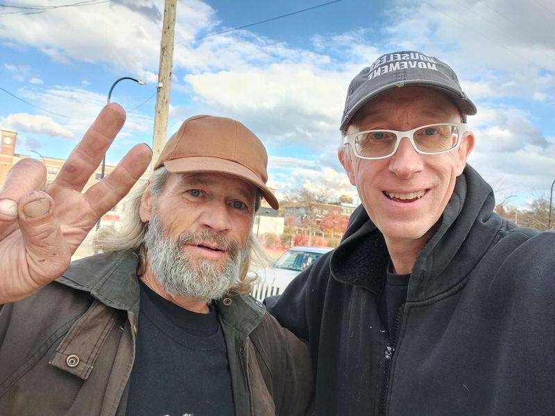

Mobile uploads
THE DRAW OF THE STREET
Something we aren’t discussing much when we discuss homelessness and addiction is how the street pulls you in.
And it’s not just homeless people, addicted people and drug dealers. It’s cops and homeless helpers and harm reduction people. It’s me.
The street has a small amount of high risk. You probably won’t die. But you could.
It’s like skydiving and other risky activities. You get the rush. You get the focus of doing something exciting and engaging.
And the only option we are giving these people is quitting everything. Quit drugs. Quit the adventure. Quit your friends.
Become like the rest of us: Get in your box. Get in your job. Work a meaningless job until you are exhausted and then collapse on the couch to the drone of whatever is on Netflix. “It’s what we all do. And look how happy we all are.”
We have SO much left to understand about people that aren’t us.
When a person quits long term homelessness and drug use people in the know will say that it only happens when “you are ready.”
What they are saying is: the life on the street has lost its appeal. It has become too hard. I know that someday it will be too hard for me too. That day is no time soon for me. I love it too much. But someday I’ll get old and tired. And I’ll probably stop the street. The street will be too much to bear.
A woman I know was recently trapped by a guy for 2 days over a dispute about drugs. He thought she stole them. She says she didn’t.
She was tired after that event. But she has too much fight left. I have a really hard time imagining her in the life of rent and a job.
Randy, on the other hand, pictured here, I think is different. He’s 62. He said he didn’t think he could do another winter on the street. He sounds ready to retire from the life. Lerryn is helping him with his social security. I think once he gets that I think I could see him move indoors.
If the street doesn’t kill you, you will eventually quit that life. Otherwise, if we want to short circuit it we have to offer a more socially acceptable alternative that is equally as compelling.